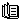
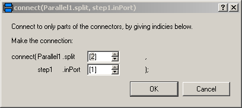

Modelica.StateGraph.UsersGuide
Modelica.StateGraph.UsersGuide
Modelica.StateGraph.UsersGuide
Modelica.StateGraph.UsersGuideLibrary StateGraph is a free Modelica package providing components to model discrete event and reactive systems in a convenient way. This package contains the User's Guide for the library and has the following content:
| Name | Description |
|---|---|
| Overview of library | |
| A first example | |
| An application example | |
| Comparison with StateGraph2 | |
| Release notes | |
|  Literature | Literature |
| Contact | Contact |
Modelica.StateGraph.UsersGuide.OverViewIn this section, an overview of the most important features of this library is given.
A StateGraph is an enhanced finite state machine. It is based on the JGrafchart method and takes advantage of Modelica features for the "action" language. JGrafchart is a further development of Grafcet to include elements of StateCharts that are not present in Grafcet/Sequential Function Charts. Therefore, the StateGraph library has a similar modeling power as StateCharts but avoids some deficiencies of StateCharts.
The basic elements of StateGraphs are steps and transitions:

Steps represent the possible states a StateGraph can have. If a step is active the Boolean variable active of the step is true. If it is deactivated, active = false. At the initial time, all "usual" steps are deactivated. The InitialStep objects are steps that are activated at the initial time. They are characterized by a double box (see figure above).
Transitions are used to change the state of a StateGraph. When the step connected to the input of a transition is active, the step connected to the output of this transition is deactivated and the transition condition becomes true, then the transition fires. This means that the step connected to the input to the transition is deactivated and the step connected to the output of the transition is activated.
The transition condition is defined via the parameter menu of the transition object. Clicking on object "transition1" in the above figure, results in the following menu:

In the input field "condition", any type of time varying Boolean expression can be given (in Modelica notation, this is a modification of the time varying variable condition). Whenever this condition is true, the transition can fire. Additionally, it is possible to activate a timer, via enableTimer (see menu above) and provide a waitTime. In this case the firing of the transition is delayed according to the provided waitTime. The transition condition and the waitTime are displayed in the transition icon.
In the above example, the simulation starts at initialStep. After 1 second, transition1 fires and step1 becomes active. After another second transition2 fires and initialStep becomes again active. After a further second step1 becomes again active, and so on.
In JGrafcharts, Grafcet and Sequential Function Charts, the network of steps and transitions is drawn from top to bottom. In StateGraphs, no particular direction is defined, since steps and transitions are blocks with input and output connectors that can be arbitrarily placed and connected. Usually, it is most practical to define the network from left to right, as in the example above, since then it is easy to read the labels on the icons.
With the block TransitionWithSignal, the firing condition can be provided as Boolean input signal, instead as entry in the menu of the transition. An example is given in the next figure:

Component "step" is an instance of "StepWithSignal" that is a usual step where the active flag is available as Boolean output signal. To this output, component "Timer" from library "Modelica.Blocks.Logical" is connected. It measures the time from the time instant where the Boolean input (i.e., the active flag of the step) became true up to the current time instant. The timer is connected to a comparison component. The output is true, once the timer reaches 1 second. This signal is used as condition input of the transition. As a result, "transition2" fires, once step "step" has been active for 1 second. Of course, any other Modelica block with a Boolean output signal can be connected to the condition input of such a transition block as well.
Conditions of a transition can either be computed by a network of logical blocks from the Logical library as in the figure above, or via the "SetBoolean" component any type of logical expression can be defined in textual form, as shown in the next figure:

With the block "SetBoolean", a time varying expression can be provided as modification to the output signal y (see block with icon text "timer.y > 1" in the figure above). The output signal can be in turn connected to the condition input of a TransitionWithSignal block.
The "SetBoolean" block can also be used to compute a Boolean signal depending on the active step. In the figure above, the output of the block with the icon text "step.active" is true, when "step" is active, otherwise it is false (note, the icon text of "SetBoolean" displays the modification of the output signal "y"). This signal can then be used to compute desired actions in the physical systems model. For example, if a valve shall be open, when the StateGraph is in "step1" or in "step4", a "SetBoolean" block may be connected to the valve model using the following condition:
valve = step1.active or step2.active
Via the Modelica operators edge(..) and change(..), conditions depending on rising and falling edges of Boolean expressions can be used when needed.
In JGrafcharts, Grafcet, Sequential Function Charts and StateCharts, actions are formulated within a step. Such actions are distinguished as entry, normal, exit and abort actions. For example, a valve might be opened by an entry action of a step and might be closed by an exit action of the same step. In StateGraphs, this is (fortunately) not possible due to Modelica's "single assignment rule" that requires that every variable is defined by exactly one equation. Instead, the approach explained above is used. For example, via the "SetBoolean" component, the valve variable is set to true when the StateGraph is in particular steps.
This feature of a StateGraph is very useful, since it allows a Modelica translator to guarantee that a given StateGraph has always deterministic behaviour without conflicts. In the other methodologies this is much more cumbersome. For example, if two steps are executed in parallel and both step actions modify the same variable, the result is either non-deterministic or non-obvious rules have to be defined which action takes priority. In a StateGraph, such a situation is detected by the translator resulting in an error, since there are two equations to compute one variable. Additional benefits of the StateGraph approach are:
To emphasize this important difference between these methodologies, consider the case that a state machine has the following hierarchy:
stateMachine.superstate1.superstate2.step1
Within "step1" a StateChart would, e.g., access variable "stateMachine.openValve", say as "entry action: openValve = true". This typical usage has the severe drawback that it is not possible to use the hierarchical state "superstate1" as component in another context, because "step1" references a particular name outside of this component.
In a StateGraph, there would be typically a "SetBoolean" component in the "stateMachine" component stating:
openValve = superstate1.superstate2.step1.active;
As a result, the "superstate1" component can be used in another context, because it does not depend on the environment where it is used.
The execution model of a StateGraph follows from its Modelica implementation: Given the states of all steps, i.e., whether a step is active or not active, the equations of all steps, transitions, transition conditions, actions etc. are sorted resulting in an execution sequence to compute essentially the new values of the steps. If conflicts occur, e.g., if there are more equations as variables, of if there are algebraic loops between Boolean variables, an exception is raised. Once all equations have been processed, the active variable of all steps are updated to the newly calculated values. Afterwards, the equations are again evaluated. The iteration stops, once no step changes its state anymore, i.e., once no transition fires anymore. Then, simulation continuous until a new event is triggered, (when a relation changes its value).
With the Modelica "sampled(..)" operator, a StateGraph might also be executed within a discrete controller that is called at regular time instants. In a future version of the StateGraph library, this might be more directly supported.
Parallel activities can be defined by component Parallel and alternative activities can be defined by component Alternative. An example for both components is given in the next figure.

Here, the branch from "step2" to "step5" is executed in parallel to "step1". A transition connected to the output of a parallel branch component can only fire if the final steps in all parallel branches are active simultaneously. The figure above is a screen-shot from the animation of the StateGraph: Whenever a step is active or a transition can fire, the corresponding component is marked in green color.
The three branches within "step2" to "step5" are executed alternatively, depending which transition condition of "transition3", "transition4", "transition4a" fires first. Since all three transitions fire after 1 second, they are all candidates for the active branch. If two or more transitions would fire at the same time instant, a priority selection is made: The alternative and parallel components have a vector of connectors. Every branch has to be connected to exactly one entry of the connector vector. The entry with the lowest number has the highest priority.
Parallel, Alternative and Step components have vectors of connectors. The dimensions of these vectors are set in the corresponding parameter menu. E.g. in a "Parallel" component:

Currently in Dymola the following menu pops up, when a branch is connected to a vector of components in order to define the vector index to which the component shall be connected:

A StateGraph can be hierarchically structured by using a CompositeStep. This is a component that inherits from PartialCompositeStep. An example is given in the next figure (from Examples.ControlledTanks):

The CompositeStep component contains a local StateGraph that is entered by one or more input transitions and that is left by one or more output transitions. Also, other needed signals may enter a CompositeStep. The CompositeStep has similar properties as a "usual" step: The CompositeStep is active once at least one step within the CompositeStep is active. Variable active defines the state of the CompositeStep.
Additionally, a CompositeStep has a suspend port. Whenever the transition connected to this port fires, the CompositeStep is left at once. When leaving the CompositeStep via the suspend port, the internal state of the CompositeStep is saved, i.e., the active flags of all steps within the CompositeStep. The CompositeStep might be entered via its resume port. In this case the internal state from the suspend transition is reconstructed and the CompositeStep continues the execution that it had before the suspend transition fired (this corresponds to the history ports of StateCharts or JGrafcharts).
A CompositeStep may contain other CompositeSteps. At every level, a CompositeStep and all of its content can be left via its suspend ports (actually, there is a vector of suspend connectors, i.e., a CompositeStep might be aborted due to different transitions).
Extends from Modelica.Icons.Information (Icon for general information packages).
Modelica.StateGraph.UsersGuide.FirstExampleA first example will be given here (not yet done).
Extends from Modelica.Icons.Information (Icon for general information packages).
Modelica.StateGraph.UsersGuide.ApplicationExampleIn this section a more realistic, still simple, application example is given, to demonstrate various features of the StateGraph library. This example shows the control of a two tank system from the master thesis of Isolde Dressler (see literature).
In the following figure the top level of the model is shown. This model is available as StateGraph.Examples.ControlledTanks.

In the right part of the figure, two tanks are shown. At the top part, a large fluid source is present from which fluid can be filled in tank1 when valve1 is open. Tank1 can be emptied via valve2 that is located in the bottom of tank2 and fills a second tank2 which in turn is emptied via valve3. The actual levels of the tanks are measured and are provided as signals level1 and level2 to the tankController.
The tankController is controlled by three buttons, start, stop and shut (for shutdown) that are mutually exclusive. This means that whenever one button is pressed (i.e., its state is true) then the other two buttons are not pressed (i.e., their states are false). When button start is pressed, the "normal" operation to fill and to empty the two tanks is processed:
The above "normal" process can be influenced by the following buttons:
The implementation of the tankController is shown in the next figure:

When the "start" button is pressed, the stateGraph is within the CompositeStep "makeProduct". During normal operation this CompositeStep is only left, once tank2 is empty. Afterwards, the CompositeStep is at once re-entered.
When the "stop" button is pressed, the "makeProduct" CompositeStep is at once terminated via the "suspend" port and the stateGraph waits in step "s2" for further commands. When the "start" button is pressed, the CompositeStep is re-entered via its resume port and the "normal" operation continues at the state where it was aborted by the suspend transition. If the "shut" button is pressed, the stateGraph waits in the "emptyTanks" step, until both tanks are empty and then waits at the initial step "s1" for further input.
The opening and closing of valves is not directly defined in the stateGraph. Instead via the "setValveX" components, the Boolean state of the valves are computed. For example, the output y of "setValve2" is computed as:
y = makeProduct.fillTank2.active or emptyTanks.active
i.e., valve2 is open, when step "makeProduct.fillTank2 or when step "emptyTanks" is active. Otherwise, valve2 is closed.
Extends from Modelica.Icons.Information (Icon for general information packages).
Modelica.StateGraph.UsersGuide.ComparisonWithStateGraph2There is a much improved library available called "Modelica_StateGraph2". If this library is not yet distributed with your Modelica tool, you can download it from https://www.modelica.org/libraries/Modelica_StateGraph2. Find below a comparison with respect to Modelica.StateGraph. It is not yet clear whether Modelica_StateGraph2 will be included in a future version of the Modelica package. Another option is to provide built-in support for state machines in a future Modelica language version which would allow an even more powerful treatment of state machines in Modelica.
The Modelica_StateGraph2 library (called StateGraph2 below) is based on the experience with the current Modelica.StateGraph library (called StateGraph1 below) and is a significantly further development of StateGraph1. Furthermore, it is heavily based on the article (Malmheden et. al. 2008), see Literature below, but uses a different implementation technique as described in this article. The StateGraph2 library has the following improvements with respect to the StateGraph1 library:
The Modelica_StateGraph2 library is described in detail in (Otter et. al. 2009, see below) and is additionally based on the following references:
 Modelica.StateGraph.UsersGuide.ReleaseNotes
Modelica.StateGraph.UsersGuide.ReleaseNotesImplemented a first version that is provided to other people.
Extends from Modelica.Icons.ReleaseNotes (Icon for release notes in documentation). Modelica.StateGraph.UsersGuide.Literature
Modelica.StateGraph.UsersGuide.LiteratureThe StateGraph library is based on the following references:
 Modelica.StateGraph.UsersGuide.Contact
Modelica.StateGraph.UsersGuide.ContactAcknowledgements: